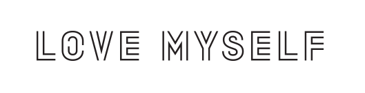

2017年11月，聯合國兒童基金會韓國委員會（UNICEF KOREA）宣布與防彈少年團所屬社 Big Hit Entertainment 合作，展開為期兩年的「LOVE MYSELF」企劃活動，此企劃與聯合國兒童基金會的世界性活動「#ENDviolence」結合，旨在防止兒童與青少年相關的所有暴力行為，並支援因暴力而遭受精神上、肉體上痛苦的孩子們。
防彈少年團與 Big Hit Entertainment 首先於2017年11月向聯合國兒童基金會捐贈了5億韓元，之後兩年間推出「LOVE YOURSELF」系列專輯收益的 3%、合作活動所販賣的官方商品所得全額，以及一般民眾募捐，都將捐贈給聯合國兒童基金會的「#ENDviolence」活動。
2018年4月16日，防彈少年團及 Big Hit Entertainment 與日本聯合國兒童基金會合作，協力推廣「LOVE MYSELF」及「#ENDviolence」的活動理念，並公開特設網站。
2018年9月24日(美國時間)，防彈少年團受邀以青年代表身分與韓國總統夫人金正淑，一同出席第73屆聯合國大會UNICEF青年議程《Generation Unlimited》發表活動，由隊長RM作為代表，以「愛自己、為自己發聲」為旨，進行近7分鐘的全英文演說。
資料來源：維基百科/Love Myself